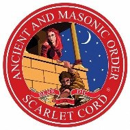
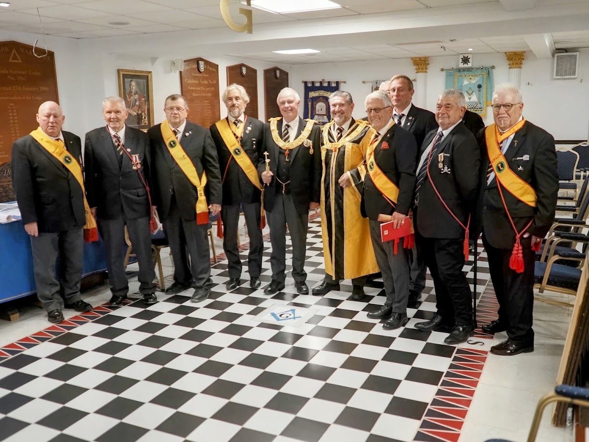
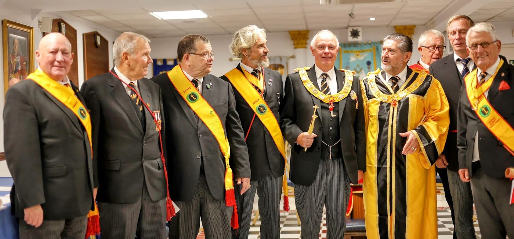

First grade · Consistory
Ostiarius
It tells how Rahab hid the spies of Israel in Jericho. With it the candidate joins his Mother Consistory and receives the title of Companion of the Scarlet Cord.
Ancient and Masonic Order of the Scarlet Cord · District of Spain

Across six grades, the Ancient and Masonic Order of the Scarlet Cord explores episodes from the Old Testament, beginning in the time of Joshua with the fall of Jericho and the story of Rahab, the woman who saved the spies of Israel by letting them down with a scarlet cord.
Membership is open to subscribing Princes of the Order of the Secret Monitor: that is why the two Orders walk together and share this website.
The present Order descends from the Royal Order of Knights of the Scarlet Cord, developed in the British Isles in 1889. Its rituals came from eighteenth-century documents held in the Masonic archives of Amsterdam, which His Honour Judge Frederick Adolphus Philbrick rewrote and enriched so that they could be worked as appendant grades to the Secret Monitor.
Its main purpose was to raise funds for the Order of the Secret Monitor Benevolent Fund, which still plays a significant role in Masonic welfare today. That Order ceased working in 1929.
In 2001 a paper by Peter Glyn Williams, then Grand Supreme Ruler of the Secret Monitor, revived interest in those long-forgotten rituals. In 2006 a Conclave was consecrated with the sole purpose of restoring them, and the enthusiasm they aroused led to the Order being inaugurated as a sovereign body on 21 July 2010, in a magnificent ceremony held in the Grand Temple at Freemasons’ Hall, London.
In Spain, the Order works through the District Grand Senatus of Spain, which installed its new District Grand Summus at Ciudad Quesada (Alicante) on 26 September 2026.
The first three grades are conferred in a Consistory; the last three are advanced ranks awarded for merit and service to the Order.
It tells how Rahab hid the spies of Israel in Jericho. With it the candidate joins his Mother Consistory and receives the title of Companion of the Scarlet Cord.
It follows the story of Ruth, her marriage to Boaz and the lineage from which King David would be born.
It teaches how to face adversity in just causes, inspired by the steadfastness of the Maccabees against tyranny.
Conferred on installed Presidents, usually after at least four years of service and on the recommendation of the Province. It recalls the passage of the Ark of the Covenant across the Jordan into Jericho.
Bestowed each year by the Grand Summus on Grand Officers for their contribution to the Order. It recounts Nebuchadnezzar’s siege of Jerusalem and how Jeremiah hid the Ark.
A rare honour reserved by the Grand Summus for the most senior members in recognition of exceptional service. It explores the Maccabees’ struggle for the independence of their people.
Before being installed as President of his Consistory, a Companion must show his proficiency in the first three grades at the Preparation ceremony. From then on he is an Eminent Companion and receives the Patent authorising his installation.
At his Installation he is dedicated as High Priest and Judge and becomes a Distinguished Companion. The office of President is comparable to that of Worshipful Master in the Craft. The most senior ranks also carry the titles of Very Distinguished and Right Distinguished Companion.
Grand Summus
M.Dist.Comp. Ian S. Currans
Deputy Grand Summus
R.Dist.Comp. Francis C. Spencer
Assistant Grand Summus
R.Dist.Comp. Trevor D. Currans
District Grand Summus
Luis Alcaina Guzmán
Deputy District Grand Summus
Dist.Comp. Rodney Charles Bignell
No. 1TI
Levante Scarlet Cord
No. 44TI
Vega Baja Scarlet Cord
No. 50TI
Caballeros de Rahab


Ciudad Quesada (Alicante), 26 September 2026.
If you are a Prince of the Secret Monitor and would like to join the Scarlet Cord, please write to us through the contact form: we will put you in touch with your nearest Consistory.